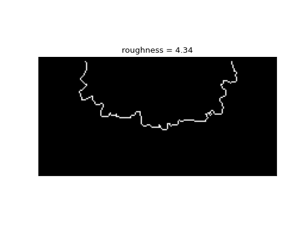

sandplover.plan.compute_shoreline_roughness_radius¶
- sandplover.plan.compute_shoreline_roughness_radius(shore_mask, origin=(0, 0), calculate_length=False, **kwargs)¶
Compute shoreline roughness, as shoreline count over mean radius.
Computes the shoreline roughness metric:
\[R = \frac{N}{(\bar{r} / dx)} \approx \frac{L_{shore}}{\bar{r}}\]where R is the roughness of the shoreline, N is the number of pixels in the shoreline in the shore_mask, \(dx\) is the grid spacing, and \(\bar{r}\) is the mean shoreline radius (after [1]).
Note
Internally,
compute_shoreline_distanceis used to compute the mean shoreline distance \(\bar{r}\).See also
This function is similar to, but distinct rom
compute_shoreline_roughness_area, which uses an approach ased on the shoreline convexity to characterize the shoreline.- Parameters:
shore_mask (
ShorelineMask,ndarray) – Shoreline mask. Can be aShorelineMaskobject, or a binarized array.origin (
tuple,np.ndarray, optional) – Origin from which the distance to all shoreline points is computed, specified in data dimensions (not indices) along dim1, dim2 of the data. Default (0, 0).calculate_length (bool, optional) – If calculate_length=True, then
compute_shoreline_lengthis used to calculate the length of the shoreline explicitly, rather than counting the pixels in shore_mask. Default is False.**kwargs – Passed to compute_shoreline_length.
- Returns:
roughness – Shoreline roughness, computed as described above.
- Return type:
float
Examples
Calculate the shoreline roughness.
>>> from sandplover.mask import ShorelineMask >>> from sandplover.plan import compute_shoreline_roughness_radius >>> from sandplover.sample_data.sample_data import golf
>>> golf = golf() >>> sm = ShorelineMask( ... golf["eta"][-1, :, :], elevation_threshold=0, elevation_offset=-0.5 ... ) >>> sm.trim_mask(length=golf.meta["L0"].data + 1) >>> origin = ( ... np.array([golf.meta["L0"].data, golf.meta["CTR"].data]) ... * golf.meta["dx"].data ... )
Compute roughness
>>> rough = compute_shoreline_roughness_radius(sm, origin=origin)
>>> fig, ax = plt.subplots() >>> sm.show(ax=ax) >>> _ = ax.set_title("roughness = {:.2f}".format(rough))
(
Source code,png,hires.png)
See also
See this example, which compares all of the “shoreline roughness” metrics implemented in sandplover.
{kind=link}
{kind=link}